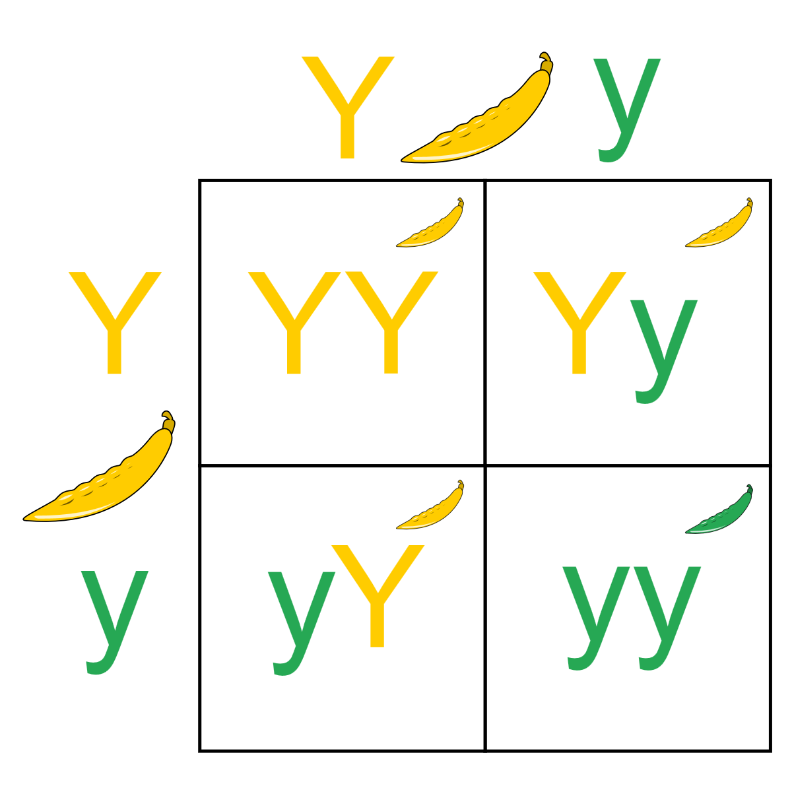

You can also download a PDF copy of this lecture.
Gregor Mendel conducted a study in which he crossed pea plants. The plants he crossed had the alleles (i.e., a form or version of a gene) for both yellow and green peas — a trait controlled by a single locus. He believed two of his laws applied here: the Law of Segregation and the Law of Dominance. These laws would determine the probabilities of certain genotypes. This can be summarized by a Punnett square diagram.

If Mendel’s Laws are true, what do they imply about the probability distribution for these four outcomes (i.e., YY, Yy, yY, or yy)? And what does this imply about the probability distribution of color (i.e., yellow or green).
Mendel bred 8023 offspring. Of these 6022 were yellow, and 2001 were green. Do his laws “fit” the data? That is, does the trait of color in pea plants exhibit what we would call Mendelian inheritance?
Observed Count: The number of times an event has been observed out of a sample size of \(n\).
Expected Count: The mean of the population distribution of the observed count. It can be computed as \(n \times p\) where \(p\) is the probability of the event.
Example: What are the observed and expected counts for Mendel’s pea study?
The discrepancy between the observed and expected counts can be measured using the \(X^2\) test statistic defined as \[ X^2 = \sum \frac{(\text{observed count} - \text{expected count})^2}{\text{expected count}}. \] Example: What is the value of \(X^2\) based on the observed and expected counts for Mendel’s pea study?
If the expected counts are correct — i.e., if the probabilities are correct — the the \(X^2\) test statistic has (approximately) a \(\chi^2\) distribution. The degrees of freedom varies, depending on how the expected counts are computed. For a goodness-of-fit test, it may be one less than the number of possible events, but it sometimes less than that if expected counts must be estimated.
Consider a test of the hypotheses \(H_0\!: p = 0.75\) versus \(H_a\!: p \neq 0.75\). The test statistic would be \[ z = \frac{6022/8023 - 0.75}{\sqrt{0.75(1-0.75)/8023}} \approx 0.122. \] How is this related to the test using the \(X^2\) test statistic? What is the limitation of the \(z\) test statistic relative to the \(X^2\) test statistic?
The Hardy-Weinburg Principle states that allele and genotype frequencies in a population will remain constant from generation to generation in the absence of other evolutionary influences. When this is true we say that they are at an equilibrium. More precisely, the probabilities that will be constant, and we can compute these probabilities with some simple equations.
Example: A sample of \(n\) = 1612 Scarlet tiger moths were classified with respect to phenotype (trait) of the spotting on their wings.| Phenoytype | Probability | Observed | Expected |
|---|---|---|---|
| white-spotted (AA) | \(\pi^2\) | 1469 | 1467.4 |
| intermediate (Aa,aA) | \(2\pi(1-\pi)\) | 138 | 141.2 |
| little spotting (aa) | \((1-\pi)^2\) | 5 | 3.4 |
Note that the three expected counts are computed as \(n\pi^2\), \(n2\pi(1-\pi)\), and \(n(1-\pi)^2\). Here \(\pi\) represents the probability of the A allele, which can be estimated as \[ \hat\pi = \frac{2 \times 1469 + 138}{2 \times 1612} \approx 0.9541. \] Replacing \(\pi\) with \(\hat\pi\) = 0.9541 in the equations above we can estimate the probability of each phenotype, and then estimate the expected counts.
Does the hypothesis that the population is at equilibrium fit the data?
| Trait | Counts | \(X^2\) | \(p\)-value |
|---|---|---|---|
| form of seed | 5474, 1850 | 0.26 | 0.61 |
| color of cotyledon | 6022, 2001 | 0.01 | 0.90 |
| color of seed coat | 705, 224 | 0.39 | 0.53 |
| form of pods | 882, 299 | 0.06 | 0.80 |
| color of unripe pods | 428, 152 | 0.45 | 0.50 |
| position of flowers | 651, 207 | 0.35 | 0.55 |
| length of stem | 787, 277 | 0.61 | 0.44 |
The mean of the \(\chi^2\) distribution equals its degrees of freedom (which is one for all of these studies), and the median is approximately 0.455. All of these studies produced test statistics that are below average, and all but one produced test statistics that were below the median. Is that suspicious?